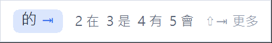
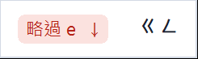
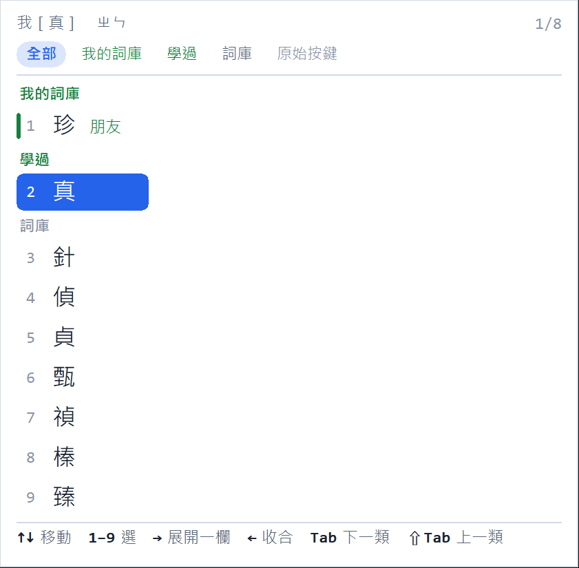
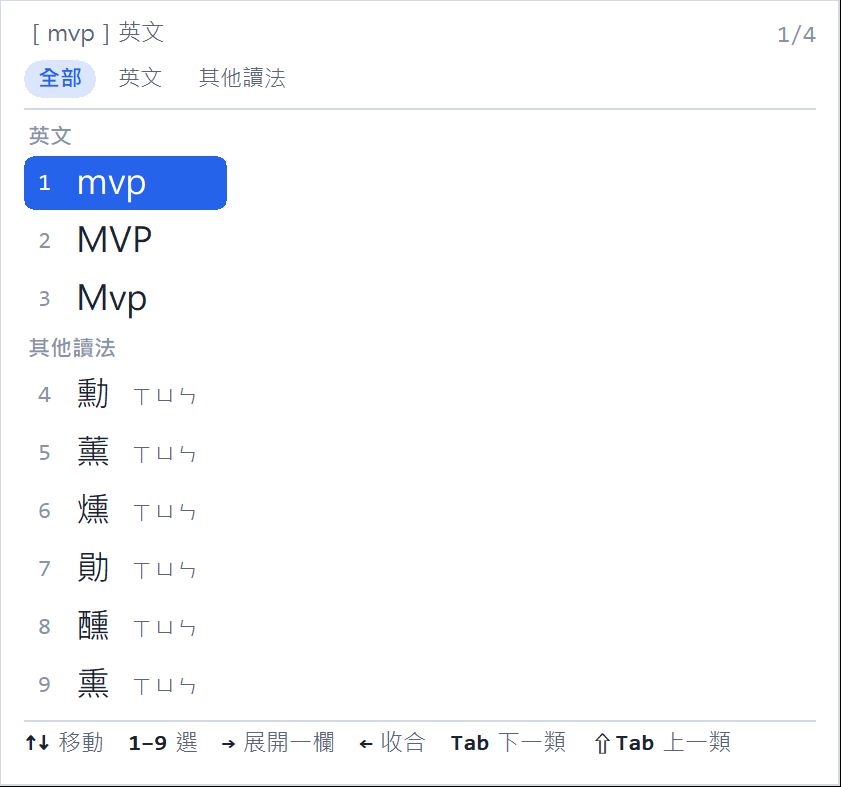
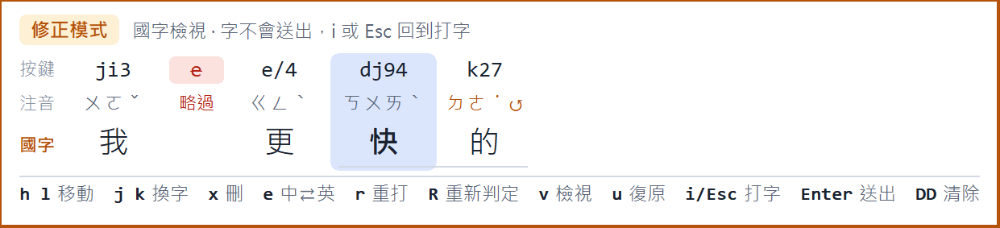
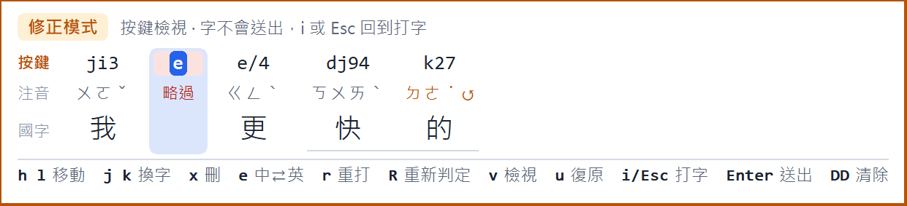
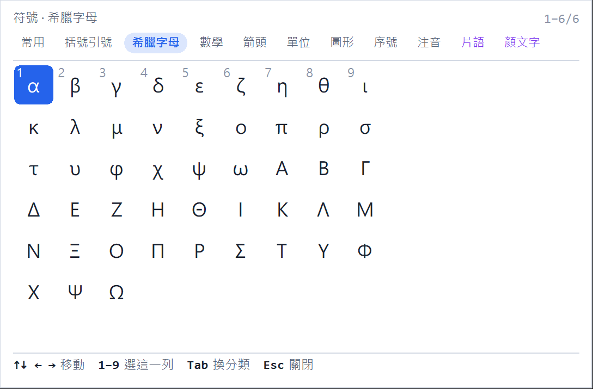
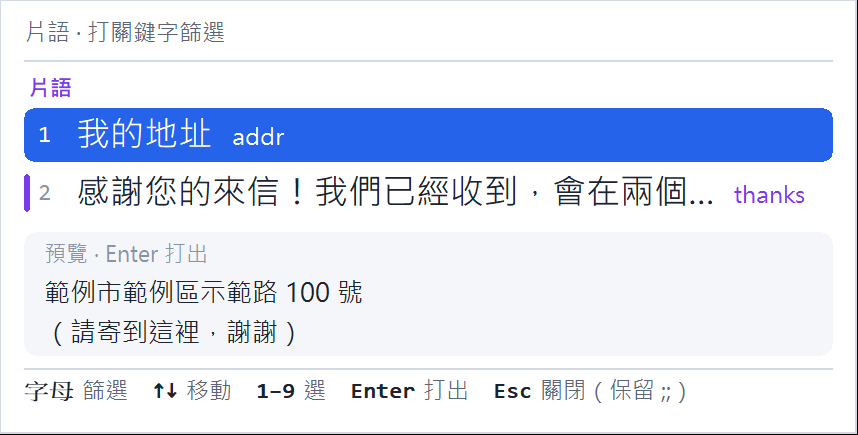
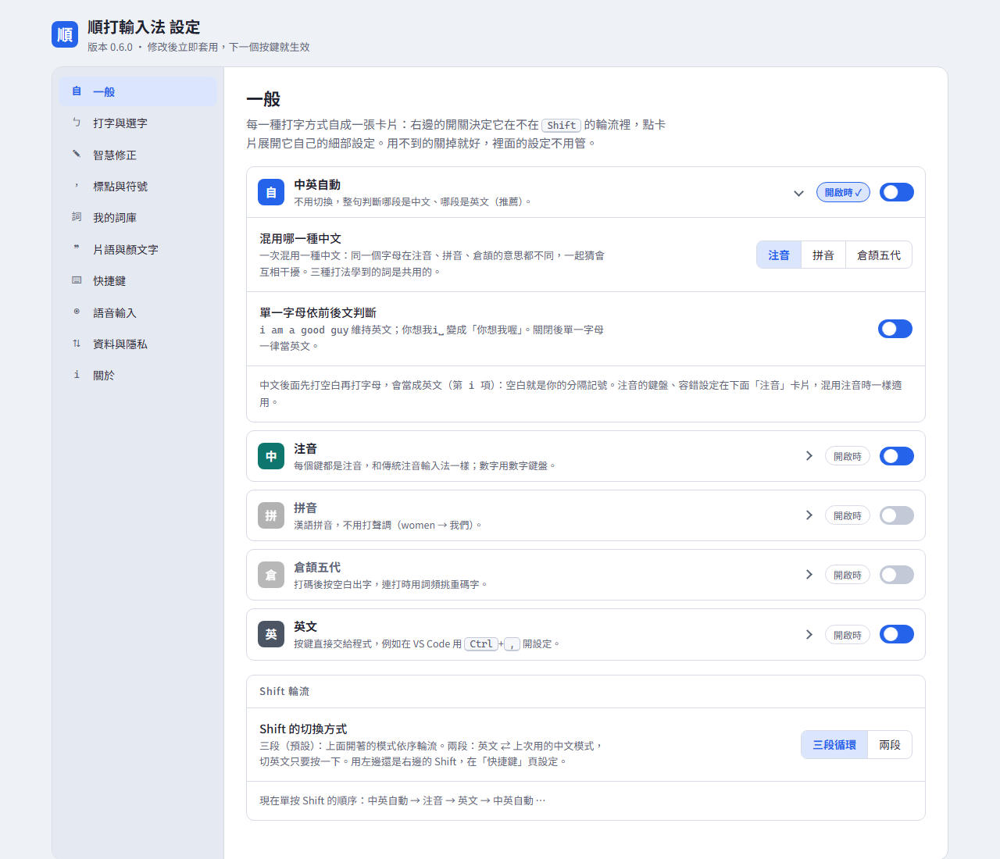

k27 → 的、8a3 → 碼），提示會顯示正確順序。順著打，不用切換。
注音和英文混在同一句裡直接打。字母先出現、旁邊提示注音，按聲調鍵才變成中文。 打反的注音、快打時多按的鍵、中英誤判，整句重新解碼時一起處理掉。
| 按鍵 | rup␣ | wu0␣ | k27 | deadline | ji3 | x96 | tj4 | e | xu3 |
|---|---|---|---|---|---|---|---|---|---|
| 注音 | ㄐㄧㄣ | ㄊㄧㄢ | ㄉㄜ˙ ↺ | 英文 | ㄨㄛˇ | ㄌㄞˊ | ㄔㄨˋ | 略過 | ㄌㄧˇ |
| 國字 | 今 | 天 | 的 | deadline | 我 | 來 | 處 | 理 |
為什麼要再做一個注音輸入法
打到一半要插一個英文詞，傳統做法是切成英文、打完再切回來。忘記切、切錯、切太慢， 就得回頭刪掉重打。順打不切換：每個鍵都先當字母顯示，按下聲調鍵才結算成中文， 整句話重新解碼一次決定哪一段是中文、哪一段是英文。
k27 → 的、8a3 → 碼），提示會顯示正確順序。顏色只有這四種意思，面板上到處都一樣——這頁也用同一套。
看它工作
下面每一張圖都由輸入法自己的繪圖程式產生（tools/make_docs_images.py），
不是示意圖。產品改了，這頁的圖下一次就跟著改。
還沒成字的注音在左邊，右邊靠齊的是按 Tab 會接上的詞。 右邊那一區位置固定，打字快的人可以整區無視它。沒話說的時候它縮成一個藍點， 提醒你這段字還沒送出去。


我的詞庫 → 學過 → 詞庫 → 其他讀法 → 原始按鍵，由近到遠。 ← → 在上面那排分類籤之間走，一眼跳過整個不想要的群組； 1–9 直接選，數字鍵盤不管 NumLock 開不開都能用。

打出來的 mvp 想換成「勳」，或是被判成中文的想換回原始按鍵，
都在同一個候選窗裡。任何一次誤判都離正確答案一個 ↓。

組字中按 Esc，鍵盤變成指令。h l 移動、 j k 換字、R 重新判定、v 切換「國字／注音／按鍵」三種檢視。 只有明確的指令會離開，其他鍵都不會不小心打出字。


打 :: 開符號面板，Tab 換到希臘字母、數學、箭頭、單位、顏文字；
打 ;; 加關鍵字叫出自己存的罐頭訊息，選中時先預覽全文再打出去。


每種打字方式一張卡片；標點有完整的「每個鍵 × 四種按法」對照表，每一格都能改；
我的詞庫分成「自動收集」和「整理過的」兩區。資料全部在
%APPDATA%\SmartIME，可以匯出帶到別台電腦（合併，不會覆蓋）。

安裝
ShundaIME-Setup-<版本>.exe 並執行
會跳出系統管理員權限確認。安裝檔還沒有數位簽章，Windows 可能顯示「已保護您的電腦」：按「其他資訊」→「仍要執行」。
移除：Windows 設定 → 應用程式 → 順打輸入法。個人資料（設定、我的詞庫、學習記憶）放在
%APPDATA%\SmartIME，安裝和移除都不會動到它。
給工程師
每一次按鍵都把整個組字區重新解碼一遍，而不是逐字決定。
把「這段鍵是中文還是英文」「這幾個鍵是哪個音節」「這個鍵是不是手滑」
放在同一個評分裡比較，所以順序打反、多按、中英誤判才有機會一起修好。
權重全部收在 decoder.Weights，改動必須讓
tests/test_typing_corpus.py（使用者真實鍵盤紀錄）保持綠燈。
| 資料夾 | 負責什麼 |
|---|---|
src/smartime/engine/ | 輸入引擎，純標準函式庫：注音、鍵盤配置、詞庫、使用者詞庫、解碼器、session、修正模式、符號 |
src/smartime/pime/ | PIME 後端協定（stdin/stdout JSON）與 text service 轉接 |
src/smartime/ui/ | 輸入法自己畫的面板（GDI）：提示列、解碼面板、分組候選窗 |
src/smartime/settings/ | 設定頁：本機 HTTP 伺服器 + 網頁介面 |
src/smartime/voice/ | 語音輸入：按住右 Ctrl 錄音、本機辨識（獨立行程） |
src/smartime/devtools/ | 模擬器、實機打字測試、面板截圖——重現 bug 回報的工具都在這 |
tools/ · installer/ | 建詞庫、產生安裝檔（Inno Setup）、版本號、文件圖片 |
內部代號是 smartime（Python 套件、PIME 後端資料夾、%APPDATA%\SmartIME）。
改名時刻意不動，舊版的設定與記憶都能沿用。
文件導覽
| 文件 | 給誰 | 裡面有什麼 |
|---|---|---|
| README | 所有人 | 三十秒看完這個專案在做什麼，和往下走的岔路 |
| install.md | 使用者 | 安裝、移除、換電腦搬資料、裝不起來時怎麼查 |
| keys.md | 使用者 | 每一個按鍵在做什麼：打字、選字、修正模式、標點四種按法 |
| architecture.md | 工程師 | 解碼器、session、PIME 協定、面板、資料流，和每個決定的理由 |
| CONTRIBUTING.md | 工程師 | 開發環境、測試怎麼跑、改了要驗什麼、怎麼出一版 |
| licenses.md | 法務、散佈者 | 詞庫、字型、元件各自的授權與出處 |